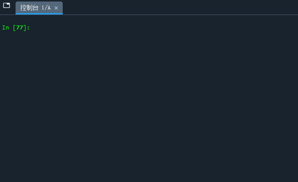

新手的第一个强化学习示例一般都从Open Gym开始。在这些示例中，我们不断地向环境施加动作，并得到观测和奖励，这也是Gym Env的基本用法：
state, reward, done, info = env.step(action)
其中state是agent的观测状态，reward是采取了action之后环境返回的奖励，done是判断后继状态是否是终止状态的flag，info是一些自定义的消息。
当后继状态是终止状态时，需要重置环境，使之回到初始状态：
env.reset()
如果我们要构建自己的强化学习问题该怎么办呢？第一步就是自定义环境。接下来，我们就以以上两个基本用法为目标，自定义一个Gym下的简单环境：
| S0 | S1 | S2 |
| -1 | -1 | 10 |
初始状态S0，终止状态S2，抵达状态S0 S1 S2的奖励分别为-1，-1和10，agent有向左和向右两个动作。
步骤1：创建文件夹和文件
本人为了做深度学习，使用conda的环境管理功能创建了名为 pytorch1.1的环境，于是来到目录：D:\Anaconda\envs\pytorch1.1\Lib\site-packages\gym\envs
创建文件夹 user ，用于专门存放自定义的环境，然后进入该目录：D:\Anaconda\envs\pytorch1.1\Lib\site-packages\gym\envs\user，创建文件 __init__.py 和 basic_env.py。
当然，也可以直接在默认的root环境下操作。来到目录：D:\Anaconda\Lib\site-packages\gym\envs，创建文件夹user，进入该目录D:\Anaconda\Lib\site-packages\gym\envs\user，创建文件 __init__.py 和 basic_env.py。
步骤2：编写 basic_env.py 和 __init__.py
basic_env是我们要写的简单环境示例的文件名，内容如下：
import gym class BasicEnv(gym.Env): def __init__(self): self.action_space = ['left', 'right'] # 动作空间 self.state_space = ['s0', 's1', 's2'] # 状态空间 self.state_transition = { # 状态转移表 's0': {'left':'s0', 'right':'s1'}, 's1': {'left':'s0', 'right':'s2'} } self.reward = {'s0':-1, 's1':-1, 's2':10} # 奖励 self.state = 's0' def step(self, action): next_state = self.state_transition[self.state][action] # 通过两个关键字查找状态转移表中的后继状态 self.state = next_state reward = self.reward[next_state] if next_state == 's2': done = True else: done = False info = {} return next_state, reward, done, info def reset(self): self.state = 's0' return self.state def render(self, mode='human'): draw = ['-' for i in range(len(self.state_space))] draw[self.state_space.index(self.state)] = 'o' draw = ''.join(draw) print(draw)
__init__.py是引入环境类的入口函数，写入：
from gym.envs.user.basic_env import BasicEnv
步骤3：注册环境
来到目录：D:\Anaconda\envs\pytorch1.1\Lib\site-packages\gym，所有的环境都在__init__.py文件中注册，打开这个文件，发现很多类似这样的代码：
# Toy Text # ---------------------------------------- register( id="Blackjack-v1", entry_point="gym.envs.toy_text:BlackjackEnv", kwargs={"sab": True, "natural": False}, ) register( id="FrozenLake-v1", entry_point="gym.envs.toy_text:FrozenLakeEnv", kwargs={"map_name": "4x4"}, max_episode_steps=100, reward_threshold=0.70, # optimum = 0.74 ) register( id="FrozenLake8x8-v1", entry_point="gym.envs.toy_text:FrozenLakeEnv", kwargs={"map_name": "8x8"}, max_episode_steps=200, reward_threshold=0.85, # optimum = 0.91 )
模仿这个格式，我们添加自己的代码，注册自己的环境：
# User # ---------------------------------------- register( id="BasicEnv-v0", # 环境名 entry_point="gym.envs.user:BasicEnv", #接口 reward_threshold=10, # 奖励阈值 max_episode_steps=10, # 最大步长 )
注册了的环境，可以通过向gym的通用接口写入环境名创建。除了环境名和接口两个基本信息外，奖励阈值和最大步长则是与训练相关的参数，还可以自行添加其他参数。
步骤4：测试环境
在测试代码中，我们设置了一个主循环，让agent随机选择向左或向右，直到抵达终止状态，或达到了在注册环境中设置的最大步长max_episode_steps（实现方式是使得done = True），代码如下：
import gym import random import time from gym import envs print(envs.registry.all()) # 查看所有已注册的环境 env = gym.make('BasicEnv-v0') env.reset() # 在第一次step前要先重置环境 不然会报错 action_space = env.action_space while True: action = random.choice(action_space) # 随机动作 state, reward, done, info = env.step(action) print('reward: %d' % reward) env.render() time.sleep(0.5) if done: break
效果如下：
